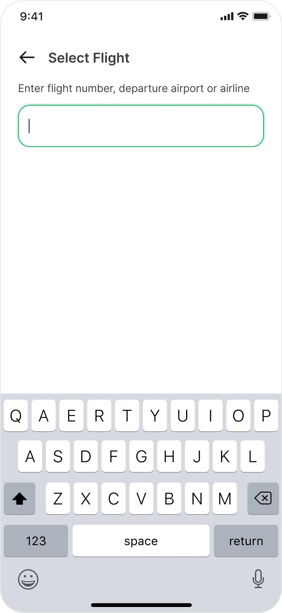
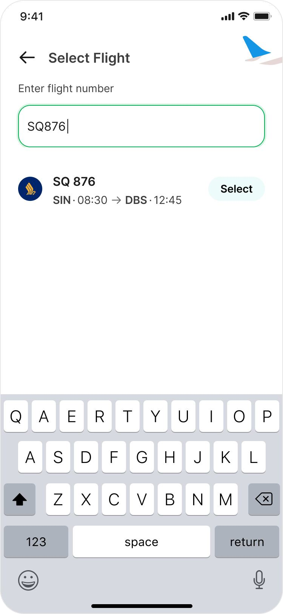
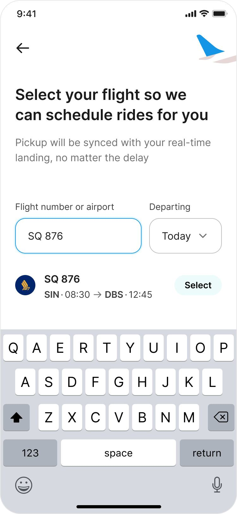

Grab Airport Transfers & Reserved Rides
Optimizing advance airport bookings to reduce passenger no-shows, handle flight delays automatically, and guide travelers directly to their pickup terminal doors.
The Market Dynamics of Airport Pickups
Airport rides represent some of the highest-value transactions in the ride-hailing space. At Grab, airport pickups are split between two distinct user behaviors:
While on-demand bookings represent the vast majority of volume (80%), advance reserved bookings account for 20% of trips. This 20% forms a highly lucrative, premium segment of users seeking maximum reliability and peace of mind.
Gaps in the Reserved Ride Experience
Despite being a premium offering, data revealed significant leakage in the advance bookings funnel. Out of all reserved airport requests, 15% resulted in incomplete rides. Alarmingly, 8% of all bookings were cancelled due to passenger no-show.
We conducted cold calling and qualitative interviews with users who had cancelled or missed their scheduled pickups to understand the root causes:
"I reached late at the pickup point because my flight was delayed."
Rider Interview • Flight Delay"I didn’t expect the wait time at immigration to be so long."
Rider Interview • Customs Wait"My flight got postponed but I couldn’t modify my ride in time."
Rider Interview • Reservation Lock"How might we reduce cancellations for reserved rides to improve fulfilment, and in turn, user retention?"
We focused on building a flight-synced, worry-free booking flow to automatically account for flight schedules and eliminate manual user modifications.

Uber (US) Flow

Didi (China) Flow
Analyzing Global Standards
We audited competitors to see how they handled advance bookings and airport transfers:
Uber (US) requests flight details upfront during booking to track arrivals but keeps the pickup scheduling and driver matching disconnected from real-time delay tracking.
Didi (China) heavily integrates airport layouts and check-in flight tracking, automatically adjusting driver schedules and notifying riders immediately upon landing.
Flight-Synced Itinerary Planning
Our solution centered around a Universal Flight Search and Smart Itinerary Recommendations. By linking flight numbers directly to bookings, the system could automatically recommend the optimal pickup time and automatically adjust booking schedules if flights are delayed.
"My biggest concern is usually finding a driver once I land. Airports are a maze to navigate through." — User Feedback
Engineering constraint: The engineering team raised concerns that building a fully custom airport map rendering system could bloat the MVP timeline. We needed to focus on lightweight, highly guided landmark directions instead.

MVP Itinerary Recommendation Concept
Key MVP Takeaways
- Simplify Flight Selection UX: Keep inputs minimal and query databases instantly.
- Focus on Pickups for MVP: Optimize the landing experience rather than departures.
- Refine IA on Post-Booking Page: Emphasize delayed-sync assurances immediately.
Select Flight Interface Iterations
Iteration 1: Simple Inputs
What worked: A simpler search bar for entering flight numbers.
What failed: The pickup time selector following flight selection was highly non-intuitive. Users faced a disconnected experience between choosing a flight and deciding when they would actually get out.

Iteration 2: Segmented Selectors
What worked: Splitting the date and time selection, adding a guided pickup recommendation nudge, and showing flight benefit callouts.
What failed: Re-introducing bottom sheets for date and time selections broke the flow and felt visually disconnected.

Iteration 3: Guided Itinerary (Final)
What worked: Simpler flight inputs first to get users committed, followed by an API-driven guided lookup that automatically displays flight schedules and suggests recommended pickup times (e.g. 45 mins post-landing).


Address Entry

Taxi Selector
Familiar Drop-off & Taxi Selection
When designing a new service, it is critical not to overhaul elements that users already trust and find intuitive. We maintained the familiar Grab taxi selection and drop-off input interface.
We allocated dedicated spaces for choosing standard vs. premium taxi classes, and retained the standard address autocomplete.
Door-to-Door Landing Guidance
The post-landing experience is where most cancellations occurred due to confusion and driver coordination delays. We designed the boarding experience through two distinct iterations:
Iteration 1: Used proximity-based geofences to automatically trigger driver notification when a passenger approached the baggage claim area. However, false triggers caused operational friction when users got stuck in immigration.
Iteration 2 (Final): Replaced automated triggers with a live flight-tracking card that reassures users: "If your flight is delayed, we'll push back your pickup time automatically."
Crucially, we added Landmark-Based Directions to guide users from baggage claim directly to the pickup door (e.g., Terminal 1 Door 4 via the Balinese Gate) to solve the airport maze problem.

Iteration 1: Proximity Trigger

Iteration 2: Flight Sync & Guide
Premium Visual Identity Updates
To elevate Reserved Rides as a premium offering while maintaining core brand cohesion, we designed high-contrast cards, branded flight icons, and a custom arrival date-picker component with haptic feedback.

Impact & Key Learnings
Significant increase in overall advance airport booking adoption post-launch.
Substantial decrease in rider no-show cancellations due to flight delay synchronization.
Slight increase in driver-side cancellations, monitored for driver-waiting policies.
Validate UX with Operational Constraints
Always optimize for real-world operations. Automated proximity triggers sound perfect in a design file, but real-world queues at immigration require manual buffers and flight-delay sync overrides.
Flexibility is Not Always Best
A super-adaptive, dynamic UI that shifts constantly can increase user anxiety when landing. Simple, step-by-step landmark directions and clear delays assurances provide far greater reassurance.